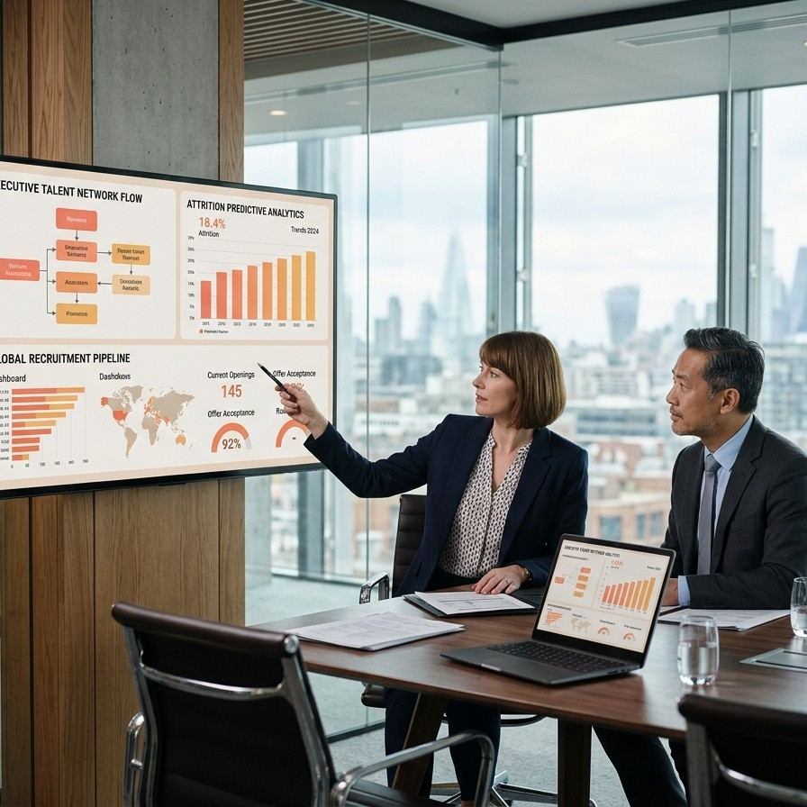

Services / HR Consulting & AI Automation and Analytics
HR Consulting & AI Automation and Analytics
Today’s organisations need more than recruitment. They need workforce intelligence, efficient operations and HR systems ready for what comes next. We help businesses attract, retain and develop talent through recruitment, virtual HR, employee engagement, employee wellbeing, and AI-driven automation and analytics.
Book a consultation
Talent Acquisition & Recruitment
Finding the right person for a role is as much about understanding your business as it is about understanding the candidate market. Our recruitment team works closely with hiring managers to define the real requirements behind a role, then runs a structured search across our networks in engineering, energy and technical fields. For senior or specialised positions, we run a dedicated executive search: mapping the market, approaching passive candidates discreetly, and managing the full interview and offer cycle on your behalf. For teams scaling quickly, we also provide project-based staffing and niche sourcing, so your internal HR team isn’t stretched thin during a hiring surge.
- Executive search
- Engineering & technical recruitment
- Renewable energy hiring
- Project-based staffing
- Niche talent sourcing
Virtual HR
Not every organisation needs a full in-house HR department. Our virtual HR service acts as an extension of your leadership team, handling HR policy, onboarding, performance processes and the day-to-day running of your HR function remotely. That includes payroll processing, attendance and leave administration, and the statutory compliance filings that come with running a workforce in India, so nothing slips between pay cycles.
- Outsourced HR operations
- HR policy design
- Payroll management
- Attendance & leave administration
- Statutory compliance support
Employee Engagement
Disengagement carries quiet costs that show up later as attrition. We design engagement programmes, listening surveys and recognition frameworks that help people feel connected to their work and to each other, and we give managers practical tools to act on what they hear.
- Engagement programmes
- Pulse & engagement surveys
- Recognition frameworks
- Manager enablement
Employee Wellbeing
Healthy people do better work. We help organisations build wellbeing initiatives that fit their workforce, from work-life balance and mental health support to wellness campaigns and healthier workplace practices.
- Wellbeing programmes
- Mental health awareness
- Wellness campaigns
- Work-life balance initiatives
AI Automation & Analytics
Most HR teams collect data; few turn it into decisions. We build HR dashboards and reporting tools that give leadership a single, reliable view of headcount, cost and performance, refreshed automatically rather than compiled by hand each month. Our attrition models flag the teams and roles most at risk of turnover before it happens, and our recruitment metrics show exactly where candidates drop out of your pipeline. Where it helps, we add AI-driven workforce intelligence and automation to take the manual work out of routine HR tasks, and we work hands-on in Power BI so your own analysts can extend these dashboards over time.
- HR dashboards & reporting
- Attrition analysis
- Recruitment metrics
- Workforce intelligence
- HR automation
- Power BI HR analytics
Who we work with
- Renewable Energy
- Power & Utilities
- EPC Organisations
- Infrastructure & Engineering
- Manufacturing
- Construction
- Technology & Services
- Real Estate
Ready to build a smarter workforce?
Tell us what you’re trying to solve, and we’ll help you plan the right approach.